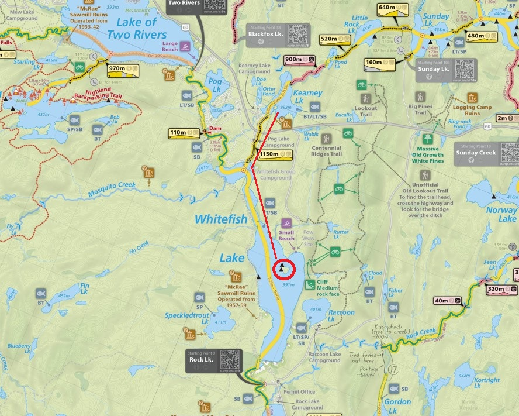
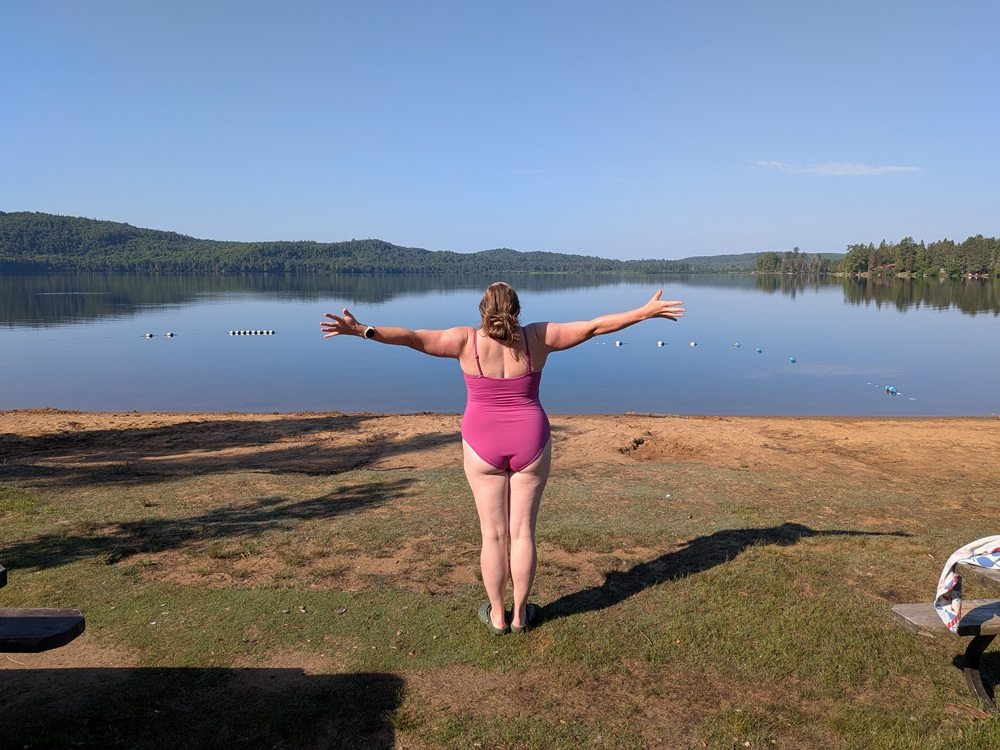

 |
2026 July 9-11 - Kearney to Whitefish Lake day trip while car camping in Kearney. Went for Bartlett for dinner. Lunch/swim spot circled on map, started and departed from campsite at Kearney. |
|
No pictures of the actual canoe route. Me on the big pines hiking trail. There were 2 big pines on the hike, so technically the name is accurate. |
 |
Katie doing her swim challenge as we were leaving. Lake of Two Rivers beach area. |